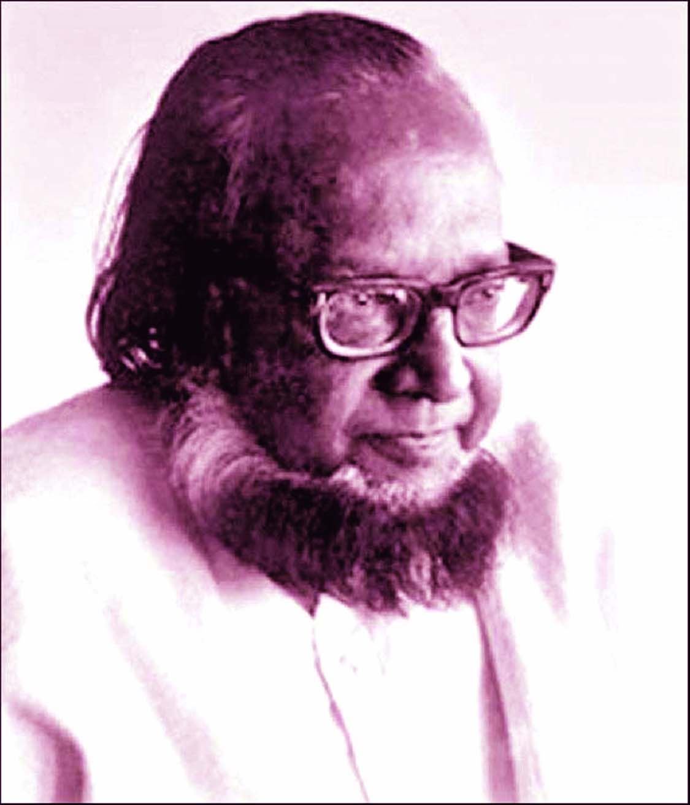

Shakib Al Hasan (Bengali: সাকিব আল হাসান; born 24 March 1987) is a Bangladeshi international cricketer who holds the record for being ranked first as an all rounder in the One Day International (ODI) format for 10 years and is still among the top 3 in highest current rankings in all three formats of the game (Test, Twenty20 and ODIs).[1][2][3] He was ranked as one of the world's most famous athletes by ESPN 'WORLD FAME 100' in 2019.[4] His aggressive left-handed batting style in the middle order, controlled slow left-arm orthodox bowling, and athletic fielding has helped him win trophies in top leagues across the world.[5][6] In 2015, Shakib became the first and only cricketer in history to be ranked the 'No.1 all-rounder' by ICC in its Player Rankings in all three formats of the game (Test, Twenty20 and One Day Internationals).[7] On 13 January 2017, he registered the highest individual score (217) by a Bangladeshi batsman in Tests.[8] In November 2018, he became the first bowler for Bangladesh to take 200 wickets in Tests.[9] In June 2019, Shakib became the fastest player to score 6,000 runs and take 250 wickets in ODIs in just 199 matches.[10] He is the highest run scorer as well as the highest wicket taker for Bangladesh in World Cup. He is also the only cricketer to score 1000 runs and to take 30 wickets in World Cup. At the 2019 Cricket World Cup, Shakib became the first cricketer to score 600 runs and take 10 wickets in a single World Cup.
Farrukh Ahmad was born in the village of Majhail of Sreepur Upazila of Magura District. He was the second son of Syed Hatem Ali and Begum Rawshan. He graduated from Khulna Zila School in 1937 and did his IA from Ripon College, Kolkata in 1939. He then enrolled at the prestigious Scottish Church College to pursue a BA (Hons) in Philosophy and English Literature, but was unable to his complete studies there.[2] Subsequently, he studied at the City College. He married his cousin Saieda Taieba Khatun in 1942.[1] He started his professional life in Inspector General (IG) Prison Office in 1943. He worked for Civil Supply for a short time in 1944.[3] As a student, Farrukh Ahmad had been attracted to the radical humanism of Manabendra Nath Roy and had participated in leftist politics. From the forties, however, he supported the Pakistan movement to have an independent Muslim state created within the region of South Asia from the British Indian empire. Despite his Pakistani and Islamic ideals, he supported the Language Movement in 1952 and, later, the liberation war of Bangladesh.[4]
Ahsan was born in the village of Alokdia of Magura district on 26 March 1922. His father, Syed Ali Hamed, was a school inspector. His mother, Syeda Kamrunnegar Khatun, was the daughter of Syed Mokarram Ali, the zamindar and pir of Agla village in Nawabganj thana, Dhaka. He grew up in an atmosphere steeped in Sufi traditions inherited from both his paternal and maternal ancestors.[4] While studying at Armanitola School in 1937, Ahsan published a poem called The Rose in his school magazine. Subsequently, stories, essays and poems written by him in Bengali were published in magazines such as Azad, Mohammadi and Saogat. When he was a student of the department of English in Dhaka University his essay titled 'Kavi Satyendranath Dutta' was published in the quarterly Parichay, a magazine edited by Sudhindranath Dutta.[4]
Serajuddin Hossain (1 March 1929 – 10 December 1971) was a prominent Bangladeshi journalist. He was the news and executive editor of The Daily Ittefaq.[1] He was captured from his residence by the Pakistan army with the help of Al-Badr and Razakar.[1] He was not only a prominent journalist, but was also considered to be a good writer and translator. He was very close to Sheikh Mujibur Rahman. He was the first to introduce investigative reporting into Bangla newspaper. During the 1971 liberation war, the country was occupied by the Pakistani army. During this time, Serajuddin Hossain wrote in the newspaper on behalf of the liberation war, and secretly helped the freedom fighters.[1]
Next page for more information